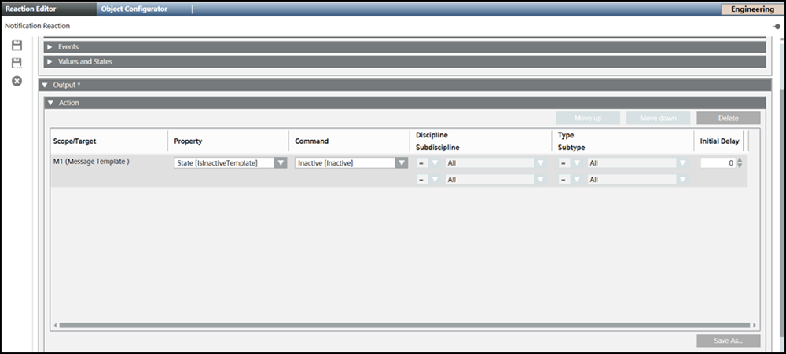
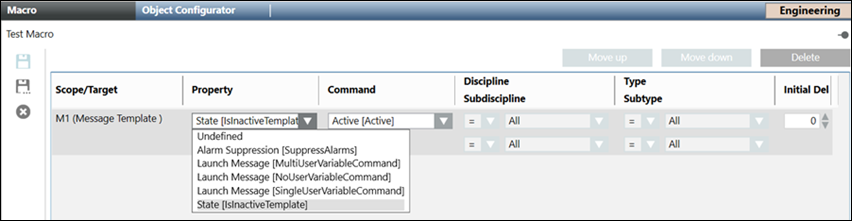

Change Notification Template State
This section describes procedure to active/inactive notification template. By default the message template is active. When the message template is inactive, it does not get launched when the event is triggered.
Change Notification Template State using Command
- The message template which you want to activate is created and configured.
- Select Applications > Notification > Notification Templates.
- Select the configured message template to change its state.
- In the Operation tab, navigate to the State command and click the appropriate state.
- Click Active to receive the notification when the event is triggered.
- Click Inactive when you do not want to receive the notification when the event is triggered.
- Click Save as.
- The message template state is changed.
Change Notification Template State using Reaction
- The message template which you want to launch is created and configured.
- Select Applications > Logics > Reactions.
- The Reaction Editor tab displays.
- Open the Output expander and then click the Action expander.
- From the System Browser, navigate to Applications > Notification > Notification Templates.
- Drag a Message template, for example, M1, to the Action expander.

- From the Property drop-down, select state [IsinactiveTemplate] option.
- In the Command drop-down, select the appropriate state.
- Click Save As and enter a name and description for the reaction and click OK.
- The message template state is changed.
Change Notification Template State using Macros
- The message template which you want to launch is created and configured.
- Select Applications > Logics > Macros.
- The Macro tab displays.
- From the System Browser, navigate to Applications > Notification > Notification Templates.
- Drag a Message template, for example, M1, to the Macro tab.
- From the Property drop-down, select state [IsinactiveTemplate] option.

- In the Command drop-down, select the appropriate state.
- Click Save As and enter a name and description for the macro and click OK.